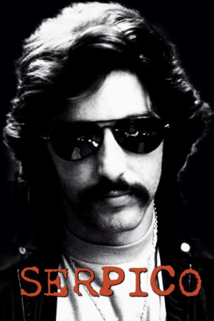
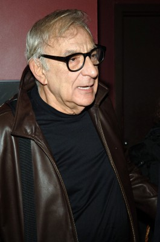

#2388 Serpico
Auszeichnungen: für 2 Oscars nominiert 1 GoldenGlobes gewonnen
 
 IMDB-Wertung: 7.8 / 10
IMDB-Wertung: 7.8 / 10  Metascore: 87
Metascore: 87 
Frank Serpico (Al Pacino), ein junger Polizist, wird in den 70ern verstärkt als Undercovercop in der Drogenszene eingesetzt, wo er sich bewährt. Als ehrlicher Mann verweigert er sich jedoch jeglichen Bestechungsversuchen, denen die meisten seiner Kollegen jedoch nicht widerstehen können. Als er die Korruption meldet, versuchen seine Vorgesetzten, den Fall zu verschweigen. Doch Serpico arbeitet weiter und veranlaßt eine Untersuchungskommission, die Vorgänge bei der Polizei zu untersuchen. Jetzt schlägt ihm offene Feindschaft seiner ehemaligen Freunde entgegen...
Jahr: 1973
Dauer: 130 Minuten
FSK: 12
Land: USA Studio: Paramount A Gulf+Western CompanyTonspuren:
Untertitel:
Auflösung: 1080p (1920x1040) Größe: 11264 MB
Genre: Thriller, Drama, Krimi, Biographie
Regisseur:  Sidney Lumet
Sidney Lumet
Drehbuch: Peter Maas, Waldo Salt, Norman Wexler
Soundtrack: Mikis Theodorakis
Darsteller:
 Al Pacino als Serpico
Al Pacino als Serpico John Randolph als Sidney Green
John Randolph als Sidney Green Tony Roberts als Bob Blair
Tony Roberts als Bob Blair Allan Rich als D.A. Tauber
Allan Rich als D.A. Tauber Damien Leake als Joey
Damien Leake als Joey John Stewart als Waterman
John Stewart als Waterman James Tolkan als Steiger
James Tolkan als Steiger M. Emmet Walsh als Gallagher
M. Emmet Walsh als Gallagher- Charles White als Delaney
 F. Murray Abraham als Detective Partner , uncredited
F. Murray Abraham als Detective Partner , uncredited- Val Bisoglio als Weapons Storage Officer , uncredited
-  Sam Coppola als Cop , uncredited
- René Enríquez als Cervantes Teacher , uncredited
- Nick Hardin als Television Cameraman , uncredited
 Judd Hirsch als Cop , uncredited
Judd Hirsch als Cop , uncredited- Bianca Hunter als (uncredited
 Tony Lo Bianco als Cop , uncredited
Tony Lo Bianco als Cop , uncredited Kenneth McMillan als Charlie , uncredited
Kenneth McMillan als Charlie , uncredited- Jay Rasumny als Television Cameraman , uncredited
 Tracey Walter als Street Urchin , uncredited
Tracey Walter als Street Urchin , uncredited- Mary Louise Weller als Sally - Girl at Party , uncredited
 Jack Kehoe als Tom Keough
Jack Kehoe als Tom Keough- Biff McGuire als Captain McClain
- Barbara Eda-Young als Laurie
- Cornelia Sharpe als Leslie
- John Medici als Pasquale
- Norman Ornellas als Rubello
- Edward Grover als Lombardo
- Albert Henderson als Peluce
 Hank Garrett als Malone
Hank Garrett als Malone- Joseph Bova als Potts
- Gene Gross als Captain Tolkin
- Woodie King Jr. als Larry
 Ed Crowley als Barto
Ed Crowley als Barto- Bernard Barrow als Palmer
- Sal Carollo als Mr. Serpico
- Mildred Clinton als Mrs. Serpico
- Nathan George als Smith
- Gus Fleming als Dr. Metz
 Richard Foronjy als Corsaro
Richard Foronjy als Corsaro Alan North als Brown
Alan North als Brown- Lewis J. Stadlen als Berman
- John McQuade als Kellogg
- Ted Beniades als Sarno
- John Lehne als Gilbert
- George Ede als Daley
- P.J. Benjamin als Man , uncredited
- Don Billett als Detective Threatening Serpico , uncredited
- Raleigh Bond als (uncredited
- John Brandon als Police Lieutenant , uncredited
Datei: X:\1973\Serpico (1973, FSK12, 1920x1040).mkv seit 04.11.2015
Festplatte: HD 1971-1979
 Es gibt insgesamt 30 Filme in der Gruppe '1973'
Es gibt insgesamt 30 Filme in der Gruppe '1973'